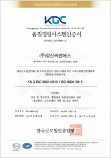
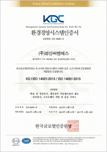
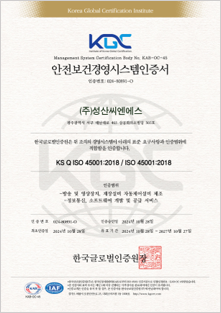
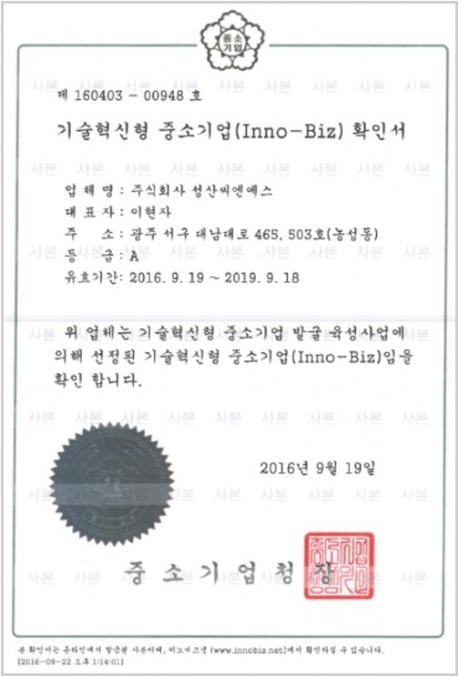
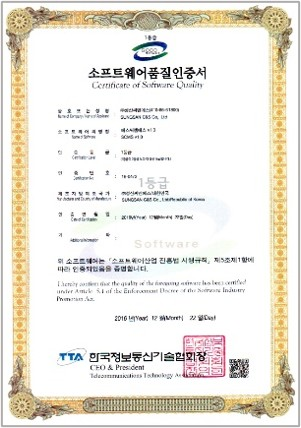

기술/역량
성산씨엔에스를 이끄는 혁신적인 기술과 역량입니다.
우리의 핵심 기술
성산씨엔에스는 다양한 산업 분야에서 최고의 솔루션을 제공하기 위한 핵심 기술 역량을 보유하고 있습니다.
-
스마트 시스템 통합
IoT, 빅데이터, AI 기술을 융합한 스마트 시스템 설계 및 구축 역량
-
자동화 제어 기술
PLC, HMI, 로봇 등을 활용한 정밀 자동화 제어 기술
-
맞춤형 소프트웨어 개발
고객 요구에 최적화된 안정적이고 효율적인 소프트웨어 개발 기술
-
정보통신 인프라 기술
신뢰성 높은 통신망 및 시스템 인프라 설계/구축 역량
인증 및 특허
성산씨엔에스는 기술력과 품질을 공식적으로 인정받았습니다.

ISO 9001 (품질경영시스템)

ISO 14001 (환경경영시스템)

ISO 45001 (안전보건 경영시스템)

기술혁신형 중소기업(INNO-BIZ)

GS 인증 (소프트웨어 품질)
특허 보유 다수
연구 개발 (R&D)
미래 기술 선도를 위해 끊임없이 연구하고 개발에 투자하고 있습니다.

성산씨엔에스 기술연구소는 4차 산업혁명 시대를 선도하는 기술 개발을 목표로 설립되었습니다. 인공지능, 빅데이터, IoT, 자동화 제어 기술 등 핵심 역량을 중심으로 산업 현장의 생산성 향상과 효율 극대화를 위한 연구에 매진하고 있습니다.
새로운 기술 트렌드를 분석하고 자체 핵심 기술을 고도화하여 경쟁 우위를 확보하고 있습니다.